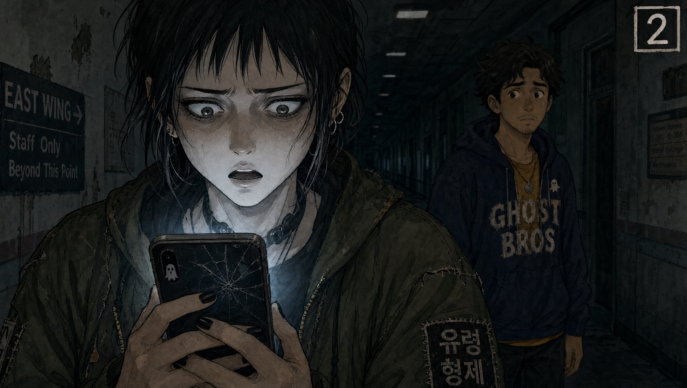

01
THE ARRIVAL
Ext. St. Mary's Hospital — Night

St. Mary's Hospital looms against a moonless sky. The parking lot is cracked asphalt and one flickering streetlight.
Jess"Vertical. We're doing vertical."
Marcus"But the landscape — people watch on laptops, Jess —"
Jess"Marcus. No one watches landscape on a toilet. Vertical gets forty percent more completion. It's science."
Marcus"This is my last video, Jess. I'm going to dental hygienist school."
She freezes for one frame. Then the armor slams back down.
Jess"At least mouths are honest. And at least take that off. You look like a blueberry had a miscarriage."
She flicks his beanie pom-pom. He recoils.

They walk toward the ER. She's ahead. He trails, slumped. Neither knows what waits inside.
02
BEHIND YOU
Int. Lobby — Night

Jess"Behold. The Ghost Bros EMF Reader. Twelve dollars on Amazon. One LED. A sticker that says 'PROFESSIONAL.'"
Marcus"It has good reviews."
Jess"The reviews are from people who bought it for their six-year-olds."

Marcus"Okay, testing the EVP app..."
EVP App"BEHIND YOU."
Jess"Did you program that?"
Marcus"No. It's random. It's a four-ninety-nine app called GhostTalkz."
Jess"I wish I was that clever."

They laugh. Same space, pulled back. Nothing behind them. One candle dies. Neither notices.
03
NOT ON CUE
Int. East Wing Hallway — Night

Jess"Welcome back to Ghost Bros. Tonight we're at St. Mary's, the most haunted hospital in the state. I'm Jess."
Marcus"And I'm Marcus. And I can already feel the energy."
He fake-shivers. Twelve viewers. Mostly bots.

SLAM! SLAM!
Jess"Did you hear that?"
She cues the app with a hidden foot-tap. Another door slams — simultaneously, from the opposite direction. Not on cue.
Marcus"That wasn't me."
Jess"It's the wind. Old building. Keep rolling."
But she checks the app. It wasn't the app.
04
THE ORIGAMI CRANE
Int. Patient Room 304 — Night

Jess"Patient Room 304. This is where the orderly saw the woman in white. On three. One... two..."
Fishing line yanks the sheet clean off the bed. Perfect execution.
Jess"And CUT. That is how you make content, Marcus."

The sheet hovers three feet off the ground. The fishing line hangs limp. Then it begins folding itself — precise, deliberate, origami.

A perfect crane floats across the room and lands in Marcus's lap.
Marcus"Jess. How many viewers?"
Jess"Four thousand. Marcus, we only have twelve subscribers."
The crane's paper wings flutter. No wind.
05
MARGARET K.
Int. East Wing Hallway — Night

Jess scrolls comments with a lazy smirk. Still in producer mode.

Comment — Margaret K."Nice trick. Used the same line on my house. Episode 7. — Margaret K."
The blood drains from Jess's face. She stops walking.

Marcus"What is it?"
Jess"Margaret K. She was real. She died."
Marcus"What are you talking about?"
Jess"The Weeping Widow. I made her up. But she was real. I used her real obituary. I used her real name."
Marcus"You used real people? Real names? Jess, you told me they were all fake."
Another comment pops up. Then another. All from names she recognizes.
06
OFFICER DUNN
Int. Hallway — Night

Officer Dunn"Evening, folks. Working on a project?"
Jess"Just a little video. Paranormal investigation."
Officer Dunn"Ah, the East wing. Watch yourselves. Lot of new patients lately. My wife says the neighborhood's changing."
He unscrews a thermos. Dust and dead flies pour into a styrofoam cup. He offers it to Marcus.
Officer Dunn"You kids have nice costumes. Very authentic. My dog would love that beanie."

He turns, walks toward a door, and passes straight through it. The door isn't there — or rather, it closed years ago and rusted shut.
Marcus"Nice guy."
Jess"Yeah. Nice guy."
Neither saw the door. The audience did.
07
HELP
Int. Chapel — Night

Marcus"We need to leave. Now."
Jess"We can't leave. We're live. The algorithm punishes early exits —"
The chapel radio crackles to life.

911 Audio"What's your emergency? ... Sir, please stay on the line..."
Marcus"That's the Dover Street case. You never published that audio."
Jess"I stole it."
Marcus"You used REAL people? Real names? Jess, you told me they were all fake. You lied to me."

The LED candles flicker. In unison. Spelling something in Morse code.
Marcus"That's... H-E-L-P."
Jess"Five hundred thousand viewers. Marcus. Half a million."
08
THE WALL
Int. Basement — Night

Rows of moldy filing cabinets. On the wall: hundreds of printed screenshots of Ghost Bros videos. Every "victim's" face circled in red marker. The creepiest room in the building, and the one with the best cell service.
PA Voice — The Collective"You made us stories. Stories last longer than people. Now we're your canon."
Jess"This isn't funny. Who's doing this?"

The EMF reader screams at maximum pitch. The plastic casing bubbles and melts like wax. The battery was never installed.
Marcus"Jess, the battery —"
Jess"I'm ending the stream."
She mashes the END LIVE button. Nothing. She mashes it again. The button turns into a thumbs-up icon. The stream continues.
Jess"It won't stop. The button won't work."
09
THE RULES
Int. Basement — Night

Dozens of ghostly figures fill the basement, all holding glowing phones. Ordinary people. Some in hospital gowns, some in the clothes they died in.
The Collective"You are live. The stream will not end until average watch-time is satisfied."
Jess"And what does that mean, exactly?"
The Collective"The audience is dead. The dead have excellent retention. We have nowhere else to be."

Marcus"What do you want from us?"
The Collective"The only way out is content we actually want."
Jess"Content you want. You want me to — what — haunt harder?"
The Collective"We want what you stole."
10
THE LOOP
Int. East Wing Hallway — Night

Marcus bolts. The hallway stretches, then folds back on itself. An Escher loop. He passes the same origami crane seven times. Seven translucent Marcuses occupy the same frame.
Marcus"I've passed that crane seven times! There's no exit!"

Jess pleads into the livestream chat, ghostly comment bubbles floating around her head.
Jess"Please. We didn't mean to hurt anyone. It was just content —"

Comment — The Collective"Your CTR peaks at 2:34. We're not leaving at 2:34."
Comment — The Collective"Your audience retention is 98.7%. Dead people have excellent retention."
Jess"These are MY analytics. How do you have my analytics?"
11
MARGARET K.
Int. Patient Room 304 — Night

Margaret K. manifests in the same room where they faked her. Not weeping. Bureaucratically furious. She wears the clothes from her obituary photo.
Margaret K."You said my husband's name was Arthur. It was Aaron. You said he died in a car accident. It was a stroke. You said I wept at his funeral. I didn't. I was angry."
Jess"I'm sorry — I'll fix it — I'll make a correction —"
Margaret K."You didn't even spell my name right in the thumbnail. Margaret with a G?"
Jess"I'll fix it —"
Margaret K."Too late for corrections. You don't get to edit me anymore."
She doesn't want revenge. She wants to be named correctly. The horror isn't violence — it's the indignity of being misfiled.
12
THE COLLECTIVE
Int. Chapel — Night

The pews fill with ghostly figures — an audience at the world's worst one-woman show. Bored, sarcastic, deeply unimpressed.
The Collective"We've seen your acting. This is better, but you're still overplaying it. Your fear face peaks at the left eyebrow. We have the data."
Jess"Who are you people?"
The Collective"We're everyone you made a villain. Everyone you reduced to a thumbnail. Everyone whose tragedy you turned into content. We're The Collective. And we have receipts."
Marcus"What do you want from us? We can't undo the videos."
The Collective"The truth. Not your special effects. Not your fishing line. Not your GhostTalkz app. The truth. Live. In one take. No edits."
13
THE REAL APOLOGY
Int. Chapel — Night

Jess"I didn't kill you. I didn't even know you. I stole a name from an obituary. That's not a crime."
The Collective"That's the apology we're waiting for."
Marcus steps between them. Tears streaming. Genuine, for the first time in twenty-three episodes.
Marcus"I'm sorry. For every tear I faked. Every prayer I performed for content. Every 'cold spot' I pretended to feel. Every family I let Jess exploit because I was too scared to ask where the names came from. I knew something was wrong. I didn't ask. I'm sorry."
The Collective is silent. Not satisfied. Waiting.
14
THE CONFESSION
Int. Chapel — Night

Jess slumps into the warm plastic chair. Someone was sitting in it before she arrived. She looks into the camera. Two million viewers. All dead. All watching.
Jess"I'm Jessica Park. I made up every ghost on this channel. I stole real names from real obituaries. The Weeping Widow was Margaret Kessler. The Demon of Dover Street was Daniel Reeves, sixteen years old. The Lady in White was Dr. Elaine Voss."
Jess"I never asked permission. I never offered corrections. I made your tragedies into my content. I didn't kill you. But I used you. And I'm sorry. Not for the faking. For the theft."
She names them all. Every single one. The view count drops. The ghosts begin to fade. Not happy. Just... disappointed enough.
15
SILENCE
Int. Chapel — Night

The Collective dissolves like breath on glass. One by one, they simply stop being interested. Not forgiveness. Just exhaustion.
The Collective"Not enough. But enough for now."
CLICK!
The chapel door unlocks with a mechanical sound — the first real-world noise in hours.
Marcus"It's over."
The livestream ends. The phones go dark. Silence. Real, ordinary, beautiful silence.
16
THE DESTRUCTION
Ext. Parking Lot — Dawn

Gray dawn. The streetlight is off. The car starts. They don't speak.
Jess"Deleting the video. Deleting the channel. Deleting the app."

She throws the phone onto the asphalt and crushes it under her heel. Glass shatters. The screen goes black.
Marcus"We're free."
They laugh. Ugly, relieved, broken laughter. The laughter of people who have been to the edge of something and been allowed to walk back.
17
GOOD ONE, ALGORITHM
Int. Marcus's Car — Dawn

The hospital shrinks in the rearview. Marcus checks his old Android — the backup phone he kept in the glove compartment.
Marcus"I'm just gonna text my sister, let her know I'm —"
A cheerful DING.
Phone"Ghost Bros is TRENDING!"
Marcus"Good one, algorithm."
He laughs. Jess doesn't.
18
NOT A JOKE
Int. Marcus's Car — Dawn

Jess grabs the phone. The channel exists. Not restored — NEW. A sleek logo. Professional editing. A horror soundtrack neither of them added.
Jess"The confession is gone. Someone edited this."
Marcus"We didn't make this. Jess, we didn't make any of this."
The video playing: their fear, their real haunting, cut for maximum suspense. Subscriber count climbs: 10 million. 20 million. 50 million.
Jess"It's not a joke."
19
WE KNOW YOU
Int. Marcus's Car — Dawn

Jess"I'm deleting it."
She hits DELETE CHANNEL. The page refreshes. The channel is back.
Jess"What —"
She hits REPORT. The button transforms into a thumbs-up. "Thanks for your engagement!"
Marcus"Jess, stop. You're feeding it."

She tries to log out. The password field auto-fills: her mother's maiden name. She never used that password for anything.
Comment — St. Mary's Admin"We know you."
Jess"It knows my mother's name. It knows everything."
20
THE BREAKING POINT
Ext. Roadside — Dawn

They pull over on the shoulder. Jess gets out of the car. The empty field stretches to the horizon.
Jess"LEAVE US ALONE!"
She screams until her voice breaks. It changes nothing. Marcus sobs in the driver's seat, forehead against the steering wheel.
The phone, sitting on the dashboard, dings.
Phone"+1,000,000 subscribers"
Ding.
Phone"+1,000,000 subscribers"
Ding. Ding. Ding. Like a heartbeat. Like a timer. Like engagement.
21
NEVER OUT
Ext. Hospital Parking Lot — Dawn

They drive back. The hospital is gone. Not demolished — absent. Just an empty lot and the one buzzing streetlight.
Marcus"Where is it?"
But the livestream is still active. Background: the parking lot. They are in the frame. Walking around the empty lot. Looking for a building that doesn't exist.
Jess"We never left."
The video shows them from a high angle. A drone shot. There is no drone.
22
THE STREAM NEVER ENDS
Ext. Hospital Parking Lot — Dawn

A thousand phones materialize in the gray dawn air. Held by invisible hands. Every screen shows Ghost Bros. Every screen shows their faces.
The view count is no longer a number — it is a symbol.
∞
Comment — St. Mary's Admin"Engagement is forever. Thank you for the content."
Jess and Marcus stand frozen in the parking lot. Their own faces appear on a thousand screens around them. The phones are held by the invisible dead — watching, waiting, subscribing.
Jess"We need to go live."
Marcus"We are live."
They were never the hosts. They were the content. And the show never ends.
THE END
There is no Scene 23. There is only the stream.
∞